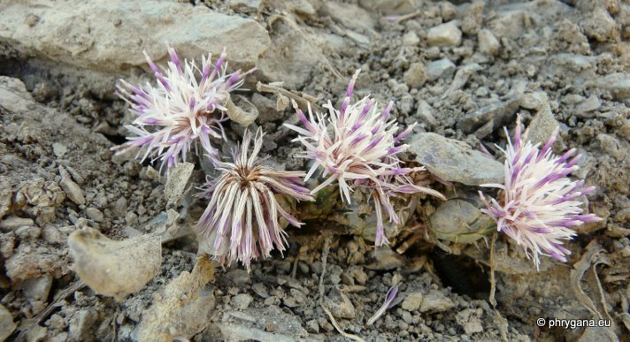
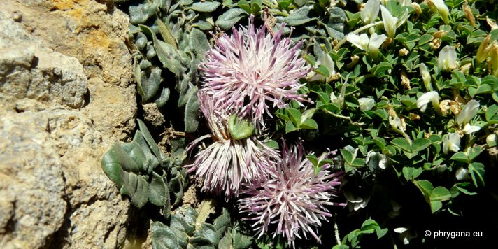
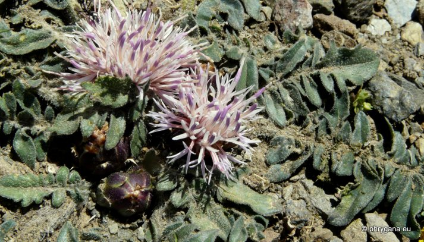
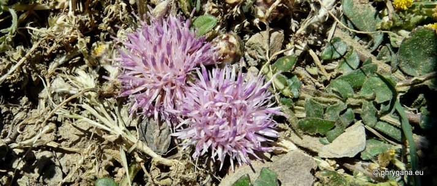
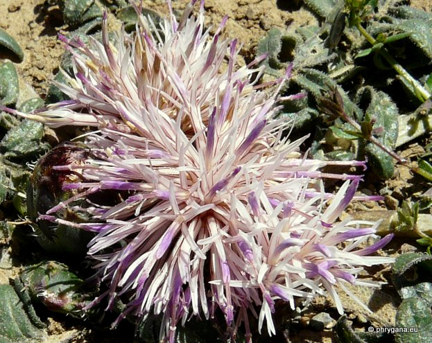

| PHRYGANA | Fauna | Flora | Galles | liste des espèces |
contact -
info - commentaires phrygana1 (at) gmail.com |
| Particularités crétoises | nouveautés | Mines | ressources naturelles |
| Centaurea raphanina SM. subsp. raphanina |
| 361 | Flora | ASTERACEAE | Cardueae | Centaurea L. |
|
 Centaurea raphanina subsp. raphanina Korfalia (Kapetaniana) 06 mai 2012 |
| Plante poilue basse presque acaule; racine épaisse, pivotante | |
| Feuilles: feuilles lyrées - pinnatifides, à duvet rugueux, souvent devenant glabres, le dernier segment à marges entières | |
| Fleurs: capitules peu nombreux (2- 4), avec un diamètre de 12 à 20 mm; corolle rose clair à prose pourpré, les fleurs de l'extérieur ternes; bractées avec une pointe courte ou une épine très courte (1- 6 mm) entière ou avec de très petites épines latérales en forme de croissant ou triangulaires | |
| Hauteur: 3 - 5 (-15) cm | Type biologique: hémicryptophyte à rosette |
| Floraison: avril mai juin juillet | |
| Altitudes: 1 – 2100 m | |
| Statut en Crète: indigène endémique | |
| Biotopes en Crète: phryganas, bords des routes, terrains rocailleux secs, falaises calcaires | |
| Distribution: Crète, Karpathos | |
|
 Centaurea raphanina subsp. raphanina Korfalia (Kapetaniana) 06 mai 2012 |
|
 Centaurea raphanina subsp. raphanina Korfalia (Kapetaniana) 06 mai 2012 |
|
 Centaurea raphanina subsp. raphanina Korfalia (Kapetaniana) 06 mai 2012 |
|
 Centaurea raphanina subsp. raphanina Korfalia (Kapetaniana) 06 mai 2012 |
| 01 juin 2012 |
| © paul fontaine -- © Phrygana.eu 2007 -- 2013 |